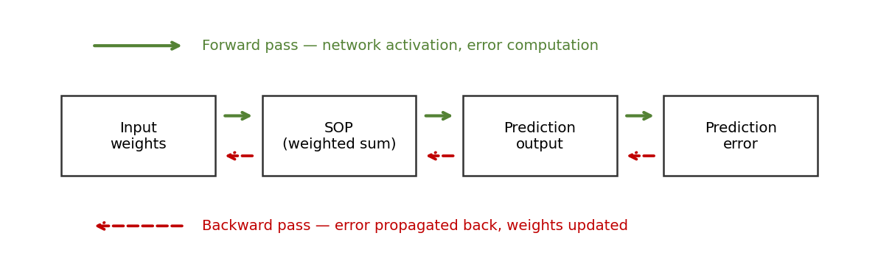
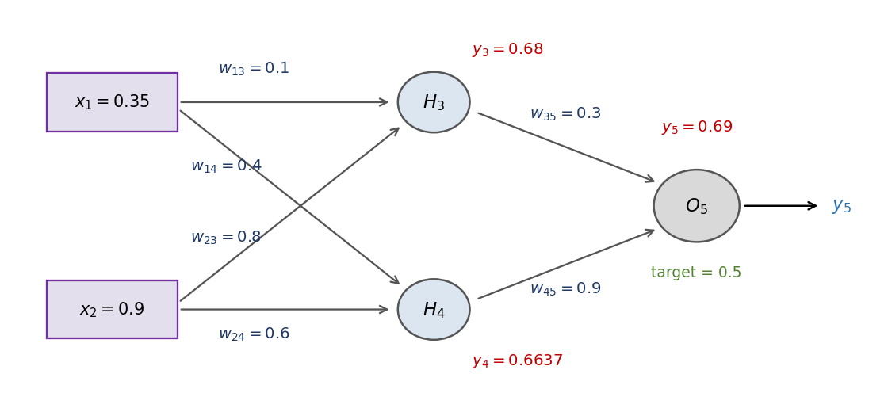

The chain rule that trains a network — walked through a full forward and backward pass.
Module 6 · Lecture notes by Dr. Abdulkarim Albanna — a worked example
Worked Example Training ~45 minPrerequisites: Module 3 (the perceptron and the weighted sum) and Module 4 (activation functions and the sigmoid derivative). You should be comfortable with the weighted sum \(s = \sum_i x_i w_i + b\), the sigmoid \(\sigma(s)\), and its derivative \(\sigma'(s) = \sigma(s)\,(1 - \sigma(s))\) before starting.

Backpropagation is short for “backward propagation of errors.” It is the fundamental algorithm for training feedforward neural networks (FFNNs) — the workhorse behind virtually every deep model in use today.
It is a supervised learning algorithm: for each training example we know the target output, and backpropagation adjusts the weights of the network to minimise the error between the network's actual output and that target. It searches for the weight values that minimise the network's total mean squared error over the training set, and it does so by repeating two passes. Do this over and over, across many examples, and the network gradually learns.
Every training step has two phases: a forward pass that computes the outputs of all units in the network and the error of the output layer, then a backward pass that uses the network error to update the weights — starting at the output layer and propagating the error backward through the network, layer by layer, by recursively computing the local gradient of each neuron. The forward pass says what the network predicted; the backward pass says how each weight should change to predict better next time.
Backprop is gradient descent on the error surface. Each weight moves against the gradient of the error:
\[ w_i(\text{new}) = w_i(\text{old}) - \eta \cdot \frac{\partial E}{\partial w_i} \]
Here \(\eta\) (eta) is the learning rate and \(\partial E / \partial w_i\) is the partial derivative of the error with respect to weight \(w_i\). Written out for a sigmoid neuron, the increment applied to a weight has a very readable anatomy:
\[ \Delta w_i = \alpha \cdot \underbrace{y_j(1 - y_j)}_{\text{sigmoid slope}} \cdot \underbrace{(t_j - y_j)}_{\text{error of neuron } j} \cdot \underbrace{x_i}_{\text{pre-synaptic activation}} \]
where \(\alpha\) is the learning rate, \(y_j(1 - y_j)\) is the derivative of the sigmoid activation, \((t_j - y_j)\) is the error \(\delta_j\) of the post-synaptic neuron, and \(x_i\) is the activation of the pre-synaptic neuron.
A single neuron chains three simple steps together: it forms a weighted sum (the sum of products, SOP), squashes it through an activation function, and (at the output) contributes to an error. Written out for a two-input neuron with a sigmoid activation:
\[ s = x_1 w_1 + x_2 w_2 + b \;\;\to\;\; y = f(s) = \frac{1}{1 + e^{-s}} \;\;\to\;\; E = \tfrac{1}{2}(d - y)^2 \]
We want to know how the error \(E\) changes when we nudge a weight \(w\). But \(w\) only touches \(E\) through the sum \(s\) and then the output \(y\). So we apply the chain rule, peeling the composition back one layer at a time — from the error, back through the activation, back to the weight:
\[ \frac{\partial E}{\partial w_i} = \frac{\partial E}{\partial y} \cdot \frac{\partial y}{\partial s} \cdot \frac{\partial s}{\partial w_i} \]
Each factor is easy to compute on its own:
\[ \frac{\partial E}{\partial y} = y - d, \qquad \frac{\partial y}{\partial s} = y(1 - y), \qquad \frac{\partial s}{\partial w_1} = x_1, \;\; \frac{\partial s}{\partial w_2} = x_2 \]
The error term gives \(\partial E / \partial y = y - d\) (the derivative of the squared error, where \(d\) is the desired/target output). The activation term, for a sigmoid, is the derivative you met in Module 4, \(\partial y / \partial s = y(1 - y)\). And the sum term gives \(\partial s / \partial w_i = x_i\), the input on that wire. Putting them together:
\[ \frac{\partial E}{\partial w_i} = (y - d) \cdot y(1 - y) \cdot x_i \]
For a multi-output network the error measure is
\[ E_d(w) = \tfrac{1}{2} \sum_{k \in \text{outputs}} (t_k - o_k)^2 \]
where \(t_k\) is the target and \(o_k\) the actual output of the \(k\)-th neuron (the factor \(\tfrac{1}{2}\) simplifies the derivative). Each weight is then changed by \(\Delta w_{ji} = \eta \cdot \delta_j \cdot o_i\), where the local gradient \(\delta_j\) depends on whether the neuron is an output unit or a hidden unit:
\[ \delta_j = o_j(1 - o_j)(t_j - o_j) \quad \text{if } j \text{ is an output unit} \]
\[ \delta_j = o_j(1 - o_j) \sum_{k} \delta_k w_{kj} \quad \text{if } j \text{ is a hidden unit} \]
A hidden unit collects the \(\delta\)s of the layer after it, weighted by the connections leading out of it. Here \(\eta\) is the learning rate, \(t_j\) is the correct (teacher) output for unit \(j\), and \(\delta_j\) is the error measure for unit \(j\).
Initialise all weights to small random numbers. While \(E(W)\) is unsatisfactory and the iteration count is below the maximum, for each training example do:
Because \(\partial y / \partial s = y(1 - y)\) is so clean, the whole gradient collapses into a tidy product. We bundle the “error × local slope” part into a single quantity \(\delta\) for each neuron, and the gradient of any incoming weight becomes simply \(\delta \times \text{input}\). Those \(\delta\) terms — one per neuron, computed from output back to input — are the heart of the algorithm below.

Our network has two inputs, one hidden layer of two neurons (\(H_3\) and \(H_4\)), and a single output neuron (\(O_5\)). Every neuron uses a sigmoid activation. We feed it one training example, with a known target output of \(0.5\) and a learning rate of \(\eta = 1\).
| Quantity | Symbol | Value |
|---|---|---|
| Input 1 | \(x_1\) | 0.35 |
| Input 2 | \(x_2\) | 0.90 |
| Weights into \(H_3\) | \(w_{13}, w_{23}\) | 0.10, 0.80 |
| Weights into \(H_4\) | \(w_{14}, w_{24}\) | 0.40, 0.60 |
| Weights into \(O_5\) | \(w_{35}, w_{45}\) | 0.30, 0.90 |
| Target output | \(d\) | 0.50 |
| Learning rate | \(\eta\) | 1 |
The forward pass computes the weighted sum \(a_j = \sum_i w_{i,j}\,x_i\) at each neuron, then its sigmoid activation \(y_j = f(a_j) = \tfrac{1}{1 + e^{-a_j}}\), layer by layer from input to output.
\[ a_3 = x_1 w_{13} + x_2 w_{23} = (0.1)(0.35) + (0.8)(0.9) = 0.035 + 0.72 = 0.755 \]
\[ y_3 = \sigma(0.755) = \frac{1}{1 + e^{-0.755}} = 0.68 \]
\[ a_4 = x_1 w_{14} + x_2 w_{24} = (0.4)(0.35) + (0.6)(0.9) = 0.14 + 0.54 = 0.68 \]
\[ y_4 = \sigma(0.68) = \frac{1}{1 + e^{-0.68}} = 0.6637 \]
\[ a_5 = y_3 w_{35} + y_4 w_{45} = (0.68)(0.3) + (0.6637)(0.9) = 0.204 + 0.597 = 0.801 \]
\[ y_5 = \sigma(0.801) = \frac{1}{1 + e^{-0.801}} = 0.69 \quad (\text{network output}) \]
The network output is \(y_5 = 0.69\), but the target is \(d = 0.5\). The prediction overshoots by \(0.19\) — that gap is exactly what the backward pass exists to shrink.
Now we push the error backward. For each neuron we compute its local gradient \(\delta\), starting at the output (where the error is directly measured) and working back into the hidden layer.
The output delta is the local slope \(y(1 - y)\) times the raw error \((t - y)\):
\[ \delta_5 = y_5(1 - y_5)(t - y_5) = (0.69)(1 - 0.69)(0.5 - 0.69) = (0.69)(0.31)(-0.19) = -0.0406 \]
Each hidden neuron gets the blame for the output error in proportion to the weight connecting it to the output. We propagate \(\delta_5\) back through those output weights, then multiply by the hidden neuron's own local slope:
\[ \delta_3 = y_3(1 - y_3)\,w_{35}\,\delta_5 = (0.68)(1 - 0.68)\big((0.3)(-0.0406)\big) = (0.68)(0.32)(-0.01218) = -0.00265 \]
\[ \delta_4 = y_4(1 - y_4)\,w_{45}\,\delta_5 = (0.6637)(1 - 0.6637)\big((0.9)(-0.0406)\big) = (0.6637)(0.3363)(-0.03654) = -0.00816 \]
Every weight is nudged by the learning rate times the \(\delta\) of the neuron it feeds into, times the activation coming up the wire:
\[ w_{\text{new}} = w_{\text{old}} + \eta \cdot \delta_{\text{downstream}} \cdot \text{input}_{\text{upstream}} \]
Applying it to a couple of weights (with \(\eta = 1\)). The output weight \(w_{35}\), whose upstream input is \(y_3\):
\[ w_{35}(\text{new}) = 0.3 + (1)(\delta_5)(y_3) = 0.3 + (-0.0406)(0.68) = 0.3 - 0.0276 = 0.2724 \]
And the input weight \(w_{13}\), whose upstream input is \(x_1\):
\[ w_{13}(\text{new}) = 0.1 + (1)(\delta_3)(x_1) = 0.1 + (-0.00265)(0.35) \approx 0.09907 \]
Updating every weight the same way gives the full table below:
| \(i\) | \(j\) | \(w_{ij}\) (old) | \(\delta_j\) | \(x_i\) | \(\eta\) | \(w_{ij}\) (new) |
|---|---|---|---|---|---|---|
| 1 | 3 | 0.1 | \(-0.00265\) | 0.35 | 1 | 0.0991 |
| 2 | 3 | 0.8 | \(-0.00265\) | 0.9 | 1 | 0.7976 |
| 1 | 4 | 0.4 | \(-0.00816\) | 0.35 | 1 | 0.3971 |
| 2 | 4 | 0.6 | \(-0.00816\) | 0.9 | 1 | 0.5926 |
| 3 | 5 | 0.3 | \(-0.0406\) | 0.68 | 1 | 0.2724 |
| 4 | 5 | 0.9 | \(-0.0406\) | 0.6637 | 1 | 0.8731 |
Run the inputs through the network again using the new weights:
\[ a_3 = (0.0991)(0.35) + (0.7976)(0.9) = 0.7525 \;\to\; y_3 = 0.6797 \]
\[ a_4 = (0.3971)(0.35) + (0.5926)(0.9) = 0.6723 \;\to\; y_4 = 0.6620 \]
\[ a_5 = (0.2724)(0.6797) + (0.8731)(0.6620) = 0.7631 \;\to\; y_5 = 0.682 \]
The output moved from \(0.69\) to \(0.682\) — closer to the target \(0.5\). The error has shrunk. That is the whole game. Repeating this forward–backward loop over many examples, again and again, is training a neural network.
Work through both parts on paper before opening the solution — running one backward pass by hand is worth ten readings.
Look at the numbers from the backward pass: \(\delta_5 = -0.0406\), but \(\delta_3 = -0.00265\) and \(\delta_4 = -0.00816\). State clearly why the hidden deltas are smaller in magnitude than the output delta, then compute the updated weight \(w_{45}(\text{new})\).
(1) Why smaller. Each hidden \(\delta\) is just \(\delta_5\) scaled down twice: once by the downstream weight (\(w_{35} = 0.3\) or \(w_{45} = 0.9\), both \(< 1\) here) and once by the hidden neuron's local slope \(y(1 - y)\), which for a sigmoid can never exceed \(0.25\):
\[ \max_y\, y(1 - y) = 0.25 \quad (\text{at } y = 0.5) \]
Multiplying by these shrinking factors makes each hidden \(\delta\) smaller than the \(\delta\) it came from. Chain this over many layers and the gradient keeps shrinking as it travels backward — the seed of the vanishing-gradient problem in deep networks.
(2) Updated weight \(w_{45}\). The upstream input to this output weight is \(y_4\):
\[ w_{45}(\text{new}) = 0.9 + (1)(\delta_5)(y_4) = 0.9 + (-0.0406)(0.6637) = 0.9 - 0.02695 = 0.87305 \]
Redo the worked example (14.2–14.3) with a new target \(d = 0.9\) and learning rate \(\eta = 0.5\). The forward pass is unchanged, so you may reuse \(y_3 = 0.68\), \(y_4 = 0.6637\), and \(y_5 = 0.69\). Compute \(\delta_5\), \(\delta_3\), \(\delta_4\), and the new weights \(w_{45}\) and \(w_{14}\). Does the output now need to move up or down?
Output delta. Same local slope as before, but now the error \((t - y_5) = 0.9 - 0.69 = +0.21\) is positive:
\[ \delta_5 = y_5(1 - y_5)(t - y_5) = (0.69)(0.31)(0.9 - 0.69) = (0.69)(0.31)(0.21) = +0.0449 \]
Hidden deltas. Propagate \(\delta_5\) back through the output weights and multiply by each hidden slope:
\[ \delta_3 = y_3(1 - y_3)\,w_{35}\,\delta_5 = (0.68)(0.32)\big((0.3)(0.0449)\big) = +0.00293 \]
\[ \delta_4 = y_4(1 - y_4)\,w_{45}\,\delta_5 = (0.6637)(0.3363)\big((0.9)(0.0449)\big) = +0.00902 \]
New weights (with \(\eta = 0.5\)). The output weight \(w_{45}\), upstream input \(y_4\):
\[ \Delta w_{45} = \eta\,\delta_5\,y_4 = (0.5)(0.0449)(0.6637) = +0.0149 \;\Rightarrow\; w_{45}(\text{new}) = 0.9 + 0.0149 = 0.9149 \]
The input weight \(w_{14}\), upstream input \(x_1\):
\[ \Delta w_{14} = \eta\,\delta_4\,x_1 = (0.5)(0.00902)(0.35) = +0.0016 \;\Rightarrow\; w_{14}(\text{new}) = 0.4 + 0.0016 = 0.4016 \]
Direction. Every \(\delta\) is now positive because the target \((0.9)\) is above the output \((0.69)\), so all the weights increase — the exact opposite of the lecture example, where the target \((0.5)\) was below the output and every weight decreased. The output needs to move up toward \(0.9\).
Everything in this course — the forward pass, the deltas, the weight updates, and the training loop — can be implemented and tested on the companion site, TorchCode. It's “like LeetCode, but for tensors”: bite-sized PyTorch problems (Linear Regression with a manual gradient step, the Adam optimizer, Kaiming weight init, gradient clipping, and more) that let you build the ideas from these notes with your own hands, and check they actually train.
This completes the foundations unit of the course — from the perceptron and activation functions to the algorithm that actually trains a network. Coming next: optimization & regularization (momentum, Adam, dropout, weight decay), then convolutional networks for images, and sequence models for language and time series. You now have the one idea the whole field rests on. Back to the course home.